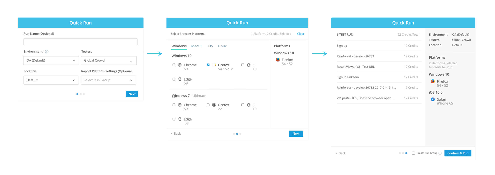
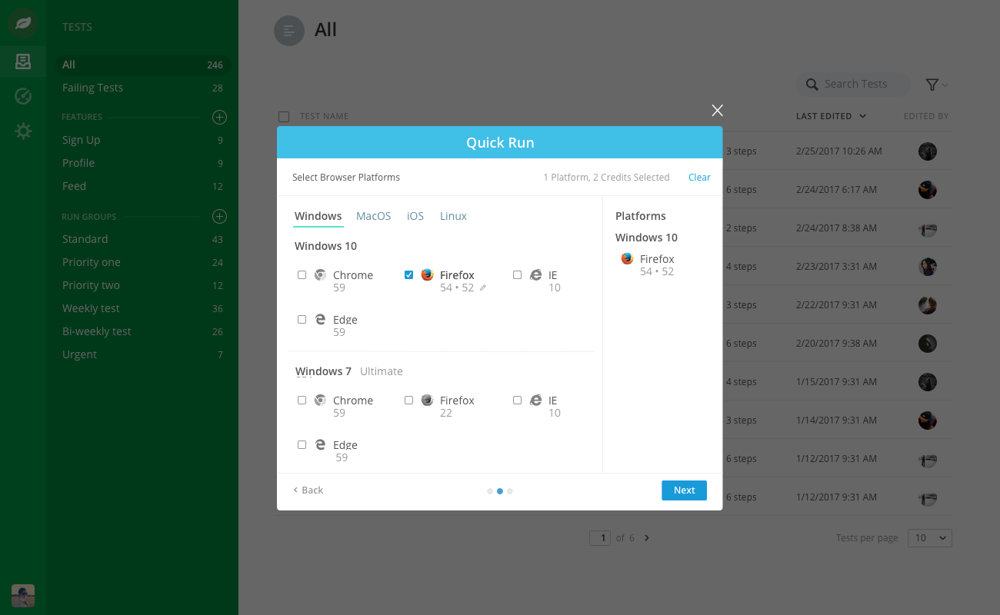
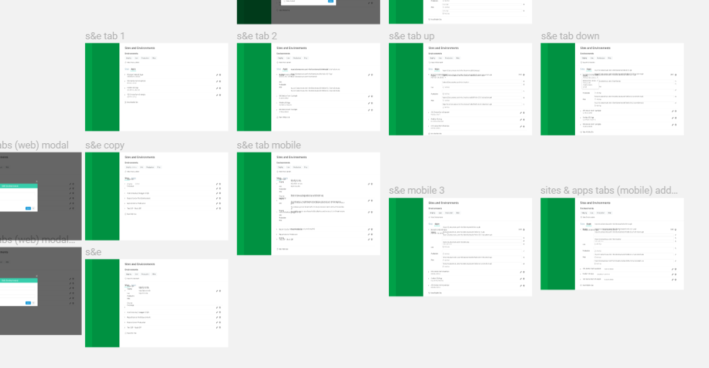
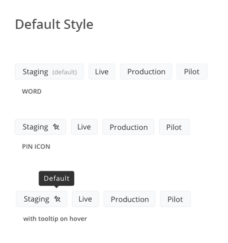
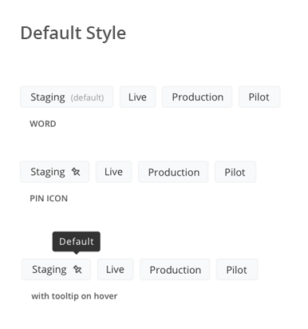
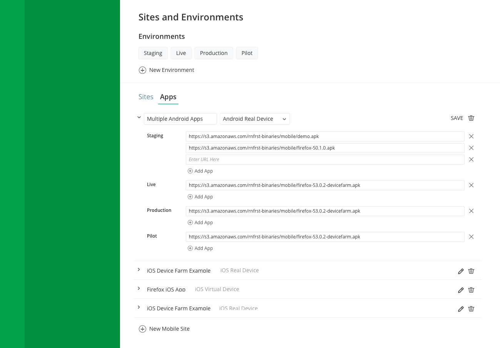

Intoduction
During the summer of 2017, I served as a Product Design Intern at Rainforest QA, a startup in San Francisco aiming to automate the quality assurance process through a combination of crowdsouring and machine learning. Over the course of 11 weeks, I redesigned several key interactions, assisted in implementing a new design language, and helped define scalable design processes at Rainforest.
In this case study, I've outlined my two main projects — Sites & Environments and Platform Versioning.
Product Versioning — one of the projects I worked on.
As a startup, the team at Rainforest was small, and the product team even smaller — in fact, the design team consisted primarily of my manager and me. I also collaborated with PMs, Customer Success Managers, and engineers throughout my time at Rainforest.
Defining the Problem Space
When I joined as an intern, the product team was in the middle of creating and deploying Rainforest 2.0: a comprehensive rethinking of functionality and user flows across the Rainforest platform, paired with a new UI design language. Throughout my internship, I worked on applying this new design language throughout the platform, reconsidering interactions on Rainforest 2.0 according to user needs.

New UI Assets.
To ensure broad QA coverage, Rainforest needed to be uniquely adaptable to each customers' platform. However, the scope of a test that could be on run on Rainforest was necessarily narrow, covering one particular set of steps in one particular environment. This required many variables to be specified — to run a typical test, a user had to consider:
- The site against which the test would be executed against.
- Which browser(s) and browser versions the test would be run on.
- What set of testers the test would be run by.
Users reported numerous frustrations in managing the complexity of settings across Rainforest, especially when trying to specify and manage variables (e.g. when running a test). During my time at Rainforest, I focused specifically on the Settings pages, where users were able to configure the Rainforest platform and tests exactly to their company's needs.
Understanding Rainforest & its Users
My first step was to map and understand the ins and outs of the Rainforest platform, as well as the users who used it — this was my first encounter with the quality assurance space, so I spent my first couple weeks learning everything I could about quality assurance and the Rainforest platform.
I also spoke to PMs and Customer Success Managers, seeking to learn more about the personas that engaged with the platform. Ultimately, my projects focused on one persona in particular: the "Individual Contributer", a user who managed and administered the Rainforest platform as a part of their job.
In an enterprise setting, I found that user research was much less direct. This was very new for me — previously, most of my user research centered around more immediate and universal design issues, where I could easily interview the people around me. Now, I found myself watching customer calls conducted by CSMs, and speaking to PMs in order to gain insights on user behavior.
Project 1: Platform Versioning
My first main project was Platform Versioning — rethinking the way that users interact with the platforms and browsers that their tests are run on. For instance, if a user wants to run a test on Android Mobile Web and Chrome, they have to know and consider the type of Android Phone, the Android OS version, the OS Chrome would be run on, the version of that OS, and so on.
Existing Design & Problem
Platform Versioning appears in two primary areas of the Rainforest platform — when running a test, and when setting defaults when running said tests.
After speaking with PMs and CSMs, I honed in on a couple key issues surrounding the Platform Versioning process. In particular, I was concerned with the ability of the existing design to scale — an ongoing product initiative was to increase the number of versions supported. That meant increased support for previous browser versions, previous OSes versions, and mobile devices. The existing solution used small icons to indicate platforms (pictured below), but these had begun to cause confusion due to their small size and limited ability to convey information.
Existing Versioning Design — when setting version defaults (1), and when running a test (2)
I found that the issues could be summarized as follows:
- An unscalable icon based design, with each platform + version being represented with a unique icon that was often hard to decipher.
- Different UX for setting default platforms and selecting them when running a test — the different design models required different task flows, which could lead to confusion.
- An increase in the number of versions that needed to be supported in the near future, which required a more robust and scalable design to accommodate.
Ideation
With this new design, I was focused on intentionality. The previous design was a sort of free for all — the platform icons all existed on the same level, and there was no particular organization in their presentation. As such, it was hard to discern exactly more complex information that differentiating platforms (e.g. OS or browser version).
I hoped to remedy this with a more intentional design — one that could play on a user's existing mental model when selecting platforms. I spoke to several people in my office about the way that they intuitively categorized OS and Browsers, and found the general hierarchy to be OS → Browser/Device → Version.
Based on this model, I began building out some ideas, focused specifically on the flow of choosing which platforms to run a test on.

Iterations on platform selections
One interaction that I was particularly focused on was the way that a browser's previous versions should be presented — whether they should always be visible, or whether they should be surfaced after a user selects the browser. This question would inform the next step: testing.
Testing
I was able to test the product with a 2 CSMs and PMs who were familiar with user behavior on the platform, as well as a couple of interns. The goal was to validate the mental model that I had based my ideation on, and to learn more about how exactly a user would approach version selection.

How should a browser's version appear?
I received a great deal of valuable feedback, and I was able to iron out a lot of specific interaction kinks — for instance, I found that it was much more intuitive to display the browser level first, then surface the browser versions after the browser is selected. I also validated the OS → Browser/Device → Version model that I had created, and I was able to incorporate this model directly into the UX.
Another piece of feedback that I received was that it was often hard to keep track of the browsers selected across different OSes and devices — for instance, selecting mobile and web browsers. This prompted me to rethink the way that platform selection was tracked; after speaking to some PMs, we settled on a "shopping cart" element that I included in the final design.
Quick Run Flow
My work on Platform Versioning led naturally to the "Quick Run" user flow, where a user is able to select and execute a suite of tests against specific testing variables (e.g. which Site + Environment, Browsers, Versions, etc.). This flow consisted of 3 stages: naming, platform version selection, and confirmation.
The three stages for executing a Quick Run
Final Prototype
The final Invision prototype can be found here — it covers the Quick Run and Platform Versioning.
The new design for Platform Versioning.
I also had an opportunity to consider the way that my redesign could be applied to the rest of the Rainforest platform, since the usage of the platform icons extended to several other pages, primarily when viewing test results. Unfortunately, it's a bit long for this case study.
Currently, the new design is still in development — there are many considerations for such a wide reaching redesign. Hopefully it'll be shipped soon!
Project 2: Sites & Environments
My second main project was to redesign the Sites & Environments section of the Settings pages, where users were able to specify the sites (websites) and environments (staging environments) that their tests would be run against. Users would be able to add environments, each of which would have a list of corresponding user-defined sites (either a webpage or a mobile app download). Additionally, users would be able to set defaults, which would be reflected when running a test.


The previous tabular design for Sites & Environments (1) — confusing at scale (2)
Based on user feedback for the existing platform, I collated a list of user needs and constraints that a new design would have to address:
- The current Sites and Environments page was not particularly conducive to managing relevant sites, especially at scale — many site entries were left blank, and there was no dynamic method of hiding these unused sites. As such, there was no easy way to surface a particular site entry.
- There was no way to add multiple app download links under one site entry; If a user needed multiple apps to be downloaded in the same environment, they had to use the | symbol to seperate them.
- The mobile category was below web, making it frustrating to reach and manage for users who prioritized mobile sites over web.
- Lack of visual hierarchy in the original design, as well as visual clutter (e.g. the edit and delete buttons, which were presented beside every Environment and Site entry).
Diverging Ideation
Based on these needs, I hit the ground running with ideation — I was able to build out some potential screens and flows.
Ideation for Sites & Environments
 

Ideation continued — defining user flows (1) thinking about how to style defaults (2)
In particular, I was focued on the task of finding a particular site, and how I could make that process as seamless as possible.
Converging Ideation & Testing
At this point, I was able to focus in on a final design and produce hi-fi mocks. I validated my design decisions with the product and customer success teams, and was able to run some basic usability tests with them. Unfortunately, I was not able to directly user test my designs as I would have liked — as mentioned previously, user testing was hard to accomplish given the constraints
A finalized screen, editing mobile Sites.
The final design included:
- A collapsable implementation at the Environment level, replacing the table.
- A UI refresh and visual hierarchy based on the Rainforest 2.0 design language.
- Updated system for adding new Sites and Environments, as well as setting defaults.
- Improved management for mobile devices and Sites, including the ability to add multiple mobile applications in one site.
Final Prototype & Implementation
The completed Invision prototype can be seen here.
After writing a product narrative document detailing my design, the last step was to hand the prototype off to engineers through Invision and Zeplin. I had valuable opportunities to work with the engineers on how the final design would be implemented and shipped, walking through potential limitations with the back end.

The new design for Sites & Environments! It's live.
Conclusion + Reflections
There's so much that I wasn't able to include in this write-up — for example, what I learned working at a start up, and how I was able to contribute in growing design processes at such a young company. I also redesigned various other points of the platform, including browser icons and pagination. If there's anything in particular you want to hear about, please feel free to reach out. I have so much to talk about!
I had an incredible time learning and creating at Rainforest. I want to thank the wonderful team at Rainforest for this opportunity, and I want to give a huge shoutout to my manager, Sophie, for being so continuously accommodating.